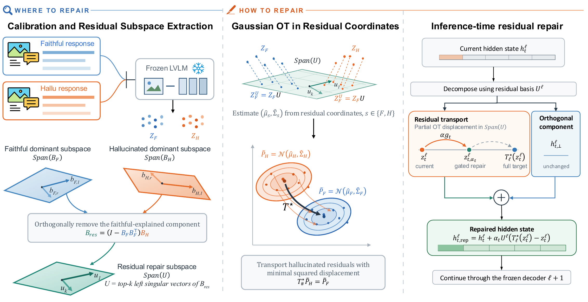

Abstract
Object hallucination in large vision-language models (LVLMs) remains a major obstacle to trustworthy generation. An intuitive mitigation strategy is to suppress the components in the representations that are associated with hallucinations. However, since these components may also contain useful visual-semantic information, directly suppressing them can impair the model’s multimodal capabilities. We therefore propose ResOT, a training-free inference-time method that replaces suppression with localized distribution repair. Specifically, ResOT confines repair to a low-dimensional residual subspace that captures hallucination-associated structures not explained by the principal subspace of faithful representations. In this subspace, a closed-form Gaussian optimal transport (OT) map aligns the hallucinated distribution with the faithful one while minimizing displacement. At inference, ResOT adjusts the repair strength for each token state based on its hallucination tendency. Across multiple benchmarks and three representative LVLMs, ResOT achieves the best overall performance in hallucination mitigation and captioning among the compared methods. It also improves multimodal performance over the corresponding vanilla LVLMs while incurring low inference overhead.